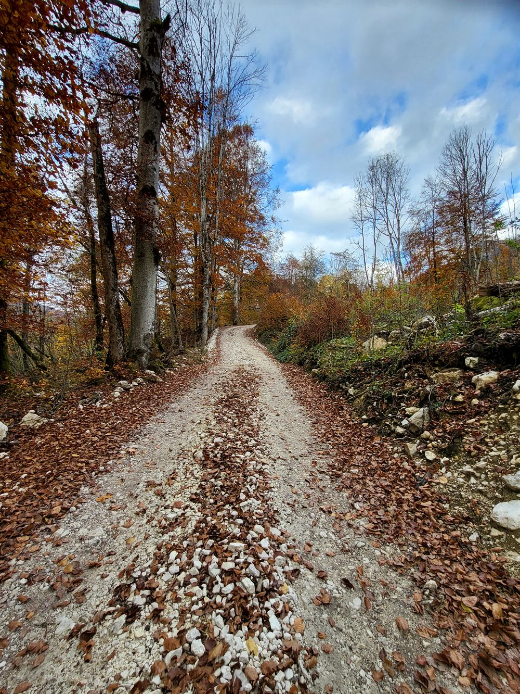

Accueil · Accompagnement individuel
Le Refuge des Possibles
Un refuge pour se déposer. Des possibles pour repartir.
Un à trois jours d'accompagnement individuel, confidentiel et entièrement personnalisé, au cœur des montagnes des Bauges.
- Durée
- 1 à 3 jours
- Lieu
- Aillon-le-Vieux, Bauges
- Format
- Individuel, jusqu'à 4 ateliers par jour
- Suivi
- Une séance en visio après le séjour
- Dates
- À convenir ensemble
- Tarif
- Sur proposition personnalisée
Parfois, nous avons besoin d'un refuge
Un endroit où nous pouvons enfin baisser la garde. Où nous n'avons plus besoin d'être forts, de rassurer les autres ou de faire semblant que tout va bien.
Une séparation, un deuil, une maladie, une difficulté familiale, une transition professionnelle, une accumulation de responsabilités... Vous continuez peut-être à avancer, à prendre soin des autres. Mais à l'intérieur, quelque chose demande votre attention.
Je vous accueille dans les montagnes des Bauges pour un accompagnement individuel qui associe écoute, exploration personnelle, expériences corporelles, marche en nature et, si vous le souhaitez, pratiques énergétiques. Un temps pour vous déposer, vous retrouver et rouvrir le champ des possibles.
Pourquoi choisir Le Refuge des Possibles ?
Votre situation est peut-être trop personnelle ou trop sensible pour être abordée en groupe. Ici, l'espace est confidentiel, sans jugement, et vous choisissez ce que vous partagez.
Nous avançons à votre rythme, dans un cadre attentif et respectueux, sans vous forcer à aborder ce pour quoi vous ne vous sentez pas prêt.
Vous avez déjà beaucoup réfléchi, mais quelque chose résiste. Nous pouvons explorer d'autres chemins : le corps, les émotions, le mouvement, les images, la créativité.
Vous n'entrez pas dans un programme prédéfini : nous construisons ensemble un parcours adapté à ce que vous traversez.
Dans quelles situations venir ?
Une rupture, une perte ou une succession d'événements vous ont déstabilisé. Vous avez besoin de prendre du recul et de retrouver des points d'appui.
Aidant familial, professionnel de l'accompagnement, parent : vous avez besoin de déposer votre charge mentale et de retrouver une place pour vous.
Une partie de vous souhaite avancer, une autre a peur. Vous voulez comprendre ces contradictions et retrouver de la cohérence.
Vous vous interrogez sur vos choix, votre place ou le sens de ce que vous faites.
Retraite, reconversion, changement familial, déménagement ou nouveau projet, à aborder avec plus de clarté et de confiance.
Vous ressassez, vous avez du mal à vous détendre et souhaitez d'autres façons de retrouver de l'apaisement.
Une approche globale : la tête, le cœur, le corps et l'esprit
Comprendre ce que nous vivons est important, mais ne suffit pas toujours à transformer une situation. C'est pourquoi l'accompagnement mobilise plusieurs dimensions de votre expérience.
Le corpsRetrouver des points d'appui
Respiration, mouvements doux, marche consciente, relaxation et exercices de présence pour écouter votre corps et retrouver davantage de calme.
Le cœurAccueillir les émotions
Comprendre vos émotions et apaiser les conflits intérieurs, avec selon les besoins l'EFT, la logosynthèse, la visualisation ou des exercices symboliques.
La têteClarifier, comprendre et choisir
Prendre du recul, explorer vos croyances, identifier ce qui vous freine, mobiliser vos ressources et retrouver votre capacité à décider.
L'espritRetrouver du sens
Explorer vos valeurs, vos aspirations et votre place dans le monde, de manière existentielle, symbolique ou spirituelle, selon votre sensibilité.
Votre parcours, votre rythme, vos besoins
Vous n'avez pas à vous adapter à un programme. C'est le programme qui s'adapte à vous.
- Un entretien préalableNous échangeons sur votre situation et vos attentes, et vérifions ensemble que le Refuge est adapté à ce que vous vivez.
- Une proposition personnaliséeJe construis votre parcours : trois à quatre ateliers par jour, sur un, deux ou trois jours.
- Votre séjourCoaching, marche, travail corporel, créativité, ressourcement ou pratique énergétique : le parcours s'ajuste à ce qui émerge.
- Un suivi en visioEnviron un à deux mois après votre venue, pour faire le point sur votre cheminement et les actions à poursuivre.
Et si vous aviez aussi besoin d'un soin ?
Parfois, vous n'avez pas envie de parler davantage. Vous ressentez surtout le besoin de ralentir et de vous accorder un temps de présence à vous-même. Je peux alors vous proposer, si vous le souhaitez, un soin Reiki ou une séance d'harmonisation énergétique, comme un temps de détente et de recentrage. Ces pratiques sont toujours proposées avec votre accord et ne se substituent pas à des soins médicaux ou psychologiques.
La montagne, un refuge pour se retrouver

Ici, la nature n'est pas seulement un décor : elle fait partie de l'accompagnement. Marcher sur un sentier, contempler un paysage, écouter le silence, retrouver le rythme de sa respiration... La marche peut aussi faciliter l'expression de ce qui est difficile à dire face à face.
Nous alternons ateliers en salle et temps dans la nature, selon vos capacités, vos envies et la météo. Il n'est pas nécessaire d'être un grand marcheur.
Des expériences pour se découvrir autrement
Quelques expériences que vous pourrez vivre pendant votre séjour.
- Se poser et retrouver ses points d'appui
Prendre conscience de votre état du moment et expérimenter la respiration, le mouvement ou la pleine présence.
- Apaiser les conflits internes
Faire dialoguer les parties de vous qui semblent s'opposer, en explorant leurs intentions et leurs besoins.
- Retrouver vos ressources
Revisiter les expériences qui vous ont donné de la force, vos réussites et vos soutiens.
- Explorer votre histoire autrement
Ligne du temps, arbre de vie, métaphores, dessin ou figurines pour donner une autre forme à ce que vous vivez.
- Retrouver le droit de rêver
Vous autoriser à imaginer de nouveau un avenir qui vous attire, même quand votre horizon s'est réduit.
- Préparer le prochain chapitre
Clarifier vos aspirations, explorer les options et choisir vos premiers pas.
Ces expériences sont des possibilités, pas un programme imposé. Nous choisissons ensemble celles qui correspondent à vos besoins.
Infos pratiques
- Durée
- 1 à 3 jours, selon vos besoins
- Lieu
- Aillon-le-Vieux, massif des Bauges, Savoie
- Horaires
- 9 h 30 à 17 h 30 (indicatifs)
- Programme
- Parcours personnalisé, jusqu'à quatre ateliers par jour
- Repas
- Déjeuner du midi sur place
- Suivi
- Une séance en visio, un à deux mois après
- Dates
- À convenir ensemble
- Tarif
- Communiqué avec votre proposition personnalisée
- Hébergement
- Non compris, plusieurs possibilités à proximité
Le Refuge des Possibles est un accompagnement de développement personnel et de bien-être. Il ne remplace pas un suivi médical ou psychothérapeutique lorsque celui-ci est nécessaire.
Un refuge pour se déposer. Des possibles pour repartir.
Vous n'avez pas besoin d'avoir toutes les réponses. Vous n'avez pas besoin d'aller bien pour vous autoriser à prendre soin de vous. Peut-être avez-vous simplement besoin d'un endroit où déposer ce qui pèse, et d'un accompagnement pour recommencer à envisager la suite.
L'Élan des Cimes · Retrouver son élan, choisir son chemin.